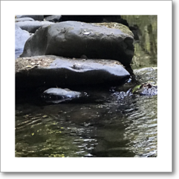
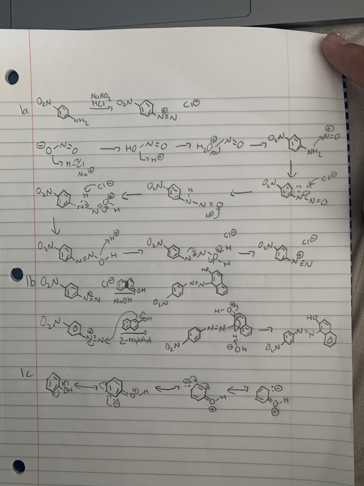
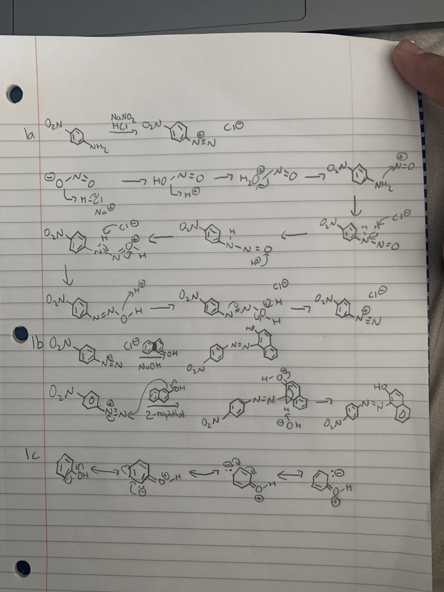
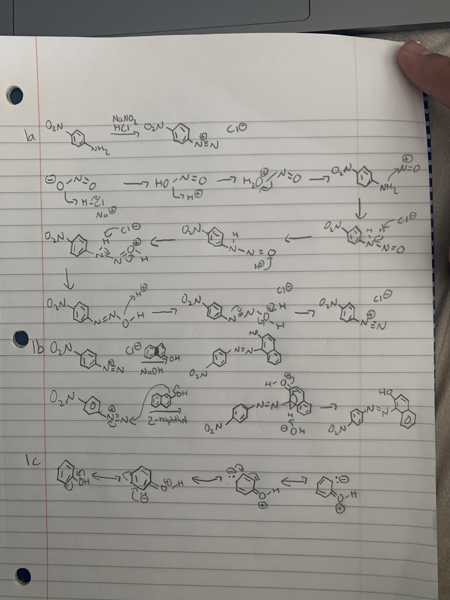

Youssef Hanna
Growing up with a cousin who is a DO, I often talked with him about his journey of becoming an osteopathic physician. Through conversing with him, I learned the differences between allopathic and osteopathic medicine in a clinical setting. I also gained an understanding of the osteopathic philosophy of taking a holistic approach by integrating the patient into the healthcare process. I quickly found myself forming a desire towards the osteopathic philosophy and the whole person approach to medicine. The emphasis on osteopathic physicians building personal relationships with their patients and understanding them on a personal level, outside of just their symptoms, continued to further capture my interest as I began to understand the positive impact a physician can make on a patient by taking a holistic approach and prioritizing empathy. My desire continued to grow as I learned about the passion and strong history osteopathic physicians have in meeting unmet healthcare needs in rural and medically underserved areas. This resonated with me as providing care in rural and medically underserved areas is one of my goals as a future physician. During most of my clinical and volunteer experiences, I would help and serve people who come from rural and urban underserved areas, and I plan to continue serving, caring, and working with the medically underserved, providing them with patient-centered care. However, my desire was greatly solidified when I observed him perform osteopathic manipulative treatment (OMT) on family members. The idea of administering patient specific care by using the relationship between the body’s structure and function and using the mind, soul, and body in the healthcare process really solidified my ambition to become an osteopathic physician.
I was quickly fascinated by this philosophy as I observed the positive impact a physician can make on a patient by taking a holistic approach and prioritizing empathy while also educating patients.
My experiences bolstered my interest and led me to do further research and readings on OMT, osteopathic medicine, and their philosophies. I found that I wholeheartedly support the principles of osteopathic medicine and was intrigued by the hands-on, interactive, and self-healing methods of OMT. While researching, I learned that osteopathic medicine has a strong foundation in primary care and produces many primary care physicians. This stood out to me as becoming a primary care physician is something that I have developed an interest in pursuing.
The more I learn about osteopathic medicine, the more excited I get to incorporate its principles and philosophies with my future patients. As a healthcare partner to my future patients, I feel encouraged to become a dedicated and enthusiastic osteopathic physician, helping patients focus on health promotion and disease prevention. I am eager to learn and understand how to use a holistic and hands-on approach and help each patient achieve a high level of wellness.
With an advanced understanding of the interrelationships between the body’s structure and function, and an understanding of how the body can be influenced by or can influence a human’s emotional or spiritual nature, the D.O. uses palpation and manipulation to provide patient specific care that promotes health and cistreats disease.
Experience
• Cope Health Scholar
• Volunterred for a total of 404.25 hours
• Duties included: bathing and feeding patients, answering call lights, preparing patient rooms, escorting patients at discharges
• Provided comfort care services to patients and their families
• President
• Educating unprivileged and underserved high school youth in the Riverside, CA area
• Help mentor underserved youth towards overcoming life obstacles and building opportunities
• Public Relations Coordinator
• Raising awareness towards Middle Eastern poverty and persecution
• Host fundraiser events that allow us to raise the funds
• Build up a following for the charity, promote all our fundraisers to the general public
• Encourage people to participate and donate in any way they can
Education
UC Riverside
Portfolio

 

